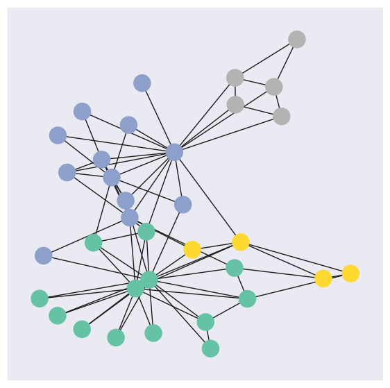
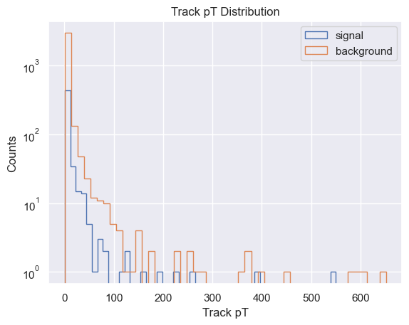
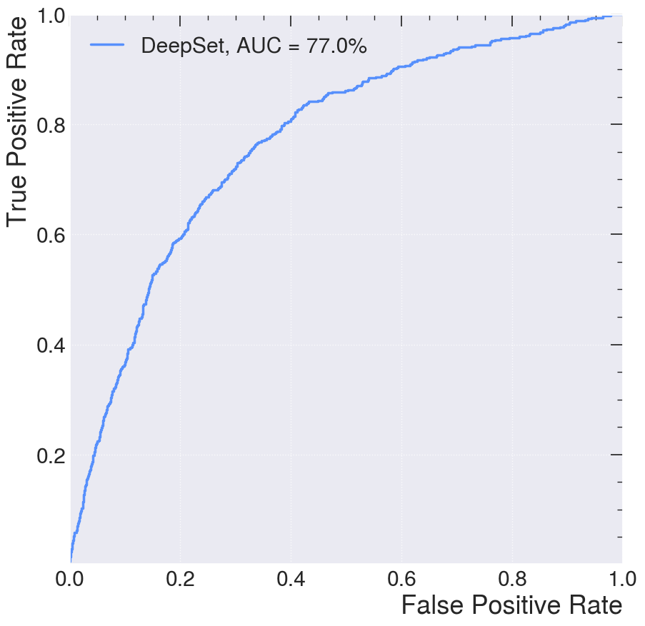
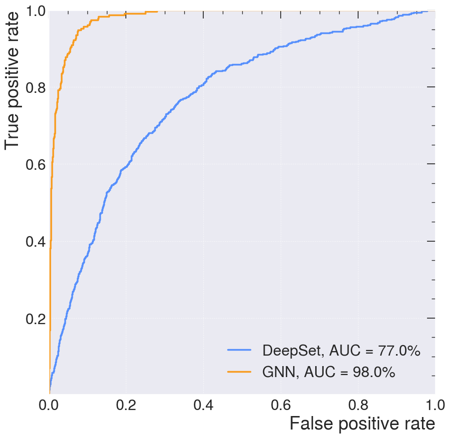

Geometric Deep Learning and Graph Neural Networks#
%matplotlib inline
import matplotlib.pyplot as plt
import seaborn as sns; sns.set_theme()
import numpy as np
import pandas as pd
import warnings
warnings.filterwarnings('ignore')
import os
import subprocess
import torch
os.environ['TORCH'] = torch.__version__
print(torch.__version__)
#ensure that the PyTorch and the PyG are the same version
#%pip install -q torch-scatter -f https://data.pyg.org/whl/torch-${TORCH}.html
#%pip install -q torch-sparse -f https://data.pyg.org/whl/torch-${TORCH}.html
#%pip install -q git+https://github.com/pyg-team/pytorch_geometric.git
import torch_geometric
device = torch.device(
"cuda:0" if torch.cuda.is_available()
else "mps" if torch.backends.mps.is_available()
else "cpu"
)
print("CUDA:", torch.cuda.is_available())
print("MPS:", torch.backends.mps.is_available())
print("Selected device:", device)
import networkx as nx
from tqdm.notebook import tqdm
2.1.2
CUDA: False
MPS: True
Selected device: mps
def wget_data(url: str, local_path='./tmp_data'):
os.makedirs(local_path, exist_ok=True)
p = subprocess.Popen(["wget", "-nc", "-P", local_path, url], stderr=subprocess.PIPE, encoding='UTF-8')
rc = None
while rc is None:
line = p.stderr.readline().strip('\n')
if len(line) > 0:
print(line)
rc = p.poll()
Introduction to Graph Data#
Graphs can be seen as a system or language for modeling systems that are complex and linked together. A graph is a data type that is modelled as a set of objects which can be represented as a node or vertex and their relationships which is called edges. A graph data can also be seen as a network data where there are points connected together.
A node (vertex) of a graph is point in a graph while an edge is a component that joins edges together in a graph. Graphs can be used to represent data from a lot of domains like biology, physics, social science, chemistry and others.

Graph Classification#
Graphs can be classified into different categories directed/undirected graphs, weighted/binary graphs and homogenous/heterogenous graphs.
Directed/Undirected graphs: Directed graphs are the ones that all the edges have directtions while in undirected graphs, the edges are does not have directions
Weighted/Binary graphs: Weighted graphs is a type of graph that each of the edges are assigned with a value while binary graphs are the ones that the edges does not have an assigned value.
Homogenous/Heterogenous graphs: Homogenous graphs are the ones that all the nodes and/or edges are of the same type (e.g. friendship graph) while heterogenous graphs are graphs where the nodes and/or edges are of different types (e.g. knowledge graph).
Traditional graph analysis methods requires using searching algorithms, clustering spanning tree algorithms and so on. A major downside to using these methods for analysis of graph data is that you require a prior knowledge of the graph to be able to apply these algorithms.
Based on the structure of the graph data, traditional machine learning system will not be able to properly interprete the graph data and thus the advent of the Graph Neural Network (GNN). Graph neural network is a domain of deep learning that is mostly concerned with deep learning operations on graph datasets.
Exploring graph data with Pytorch Geometric#
Now we will explore graph and graph neural networks using the PyTorch Geometric (PyG) package (already loaded)
Let’s create a function that will help us visualize a graph data.
def visualize_graph(G, color):
plt.figure(figsize=(7,7))
plt.xticks([])
plt.yticks([])
nx.draw_networkx(G, pos=nx.spring_layout(G, seed=42), with_labels=False,
node_color=color, cmap="Set2")
plt.show()
PyG provides access to a couple of graph datasets. For this notebook, we are going to use Zachary’s karate club network dataset.
Zachary’s karate club is a great example of social relationships within a small group. This set of data indicated the interactions of club members outside of the club. This dataset also documented the conflict between the instructor, Mr.Hi, and the club president, John because of course price. In the end, half of the members formed a new club around Mr.Hi, and the other half either stayed at the old karate club or gave up karate.
Every node (member) is labeled with one of four classes. These communities reflect the following segments of the club:
Faction 1 (Mr. Hi’s Core): Members strongly aligned with the instructor, Mr. Hi.
Faction 2 (John A’s Core): Members strongly aligned with the club administrator, John A.
Ambivalent/Loyalty Split: A group of members who “battled with the decision” of which club to join due to split loyalties.
Relationship-Only: Members who maintained social ties with both leaders but ultimately quit practicing karate after the club’s fission.
from torch_geometric.datasets import KarateClub
dataset = KarateClub()
Now that we have imported a graph dataset, let’s look at some of the properties of a graph dataset. We will look at some of the properties at the level of the dataset and then select a graph in the dataset to explore it’s properties.
print('Dataset properties')
print('==============================================================')
print(f'Dataset: {dataset}') #This prints the name of the dataset
print(f'Number of graphs in the dataset: {len(dataset)}')
print(f'Number of features: {dataset.num_features}') #Number of features each node in the dataset has
print(f'Number of classes: {dataset.num_classes}') #Number of classes that a node can be classified into
# Since we have one graph in the dataset, we will select the graph and explore it's properties
data = dataset[0]
print('Graph properties')
print('==============================================================')
# Gather some statistics about the graph.
print(f'Number of nodes: {data.num_nodes}') #Number of nodes in the graph
print(f'Number of edges: {data.num_edges}') #Number of edges in the graph
print(f'Average node degree: {data.num_edges / data.num_nodes:.2f}') # Average number of nodes in the graph
print(f'Contains isolated nodes: {data.has_isolated_nodes()}') #Does the graph contains nodes that are not connected
print(f'Contains self-loops: {data.has_self_loops()}') #Does the graph contains nodes that are linked to themselves
print(f'Is undirected: {data.is_undirected()}') #Is the graph an undirected graph
Dataset properties
==============================================================
Dataset: KarateClub()
Number of graphs in the dataset: 1
Number of features: 34
Number of classes: 4
Graph properties
==============================================================
Number of nodes: 34
Number of edges: 156
Average node degree: 4.59
Contains isolated nodes: False
Contains self-loops: False
Is undirected: True
Now let’s visualize the graph using the function that we created earlier. But first, we will convert the graph to networkx graph
from torch_geometric.utils import to_networkx
G = to_networkx(data, to_undirected=True)
visualize_graph(G, color=data.y)

Implementing a Graph Neural Network#
For this notebook, we will use a simple GNN which is the Graph Convolution Network (GCN) layer.
GCN is a specific type of GNN that uses convolutional operations to propagate information between nodes in a graph. The convolutional architecture utilizes a localized first-order approximation of spectral graph convolutions, as described in this paper. Spectral graph convolution is a method for defining convolutional operations on graphs by performing filtering in the frequency (spectral) domain.
GCNs leverage a localized aggregation of neighboring node features to update the representations of the nodes.
GCNs are based on the convolutional operation commonly used in image processing, adapted to the graph domain.
The layers in a GCN typically apply a graph convolution operation followed by non-linear activation functions.
GCNs have been successful in tasks such as node classification, where nodes are labeled based on their features and graph structure.
Our GNN is defined by stacking three graph convolution layers, which corresponds to aggregating 3-hop neighborhood information around each node (all nodes up to 3 “hops” away). In addition, the GCNConv layers reduce the node feature dimensionality to 2, i.e., 34→4→4→2. Each GCNConv layer is enhanced by a tanh non-linearity. We then apply a linear layer which acts as a classifier to map the nodes to 1 out of the 4 possible classes.
import torch
from torch.nn import Linear
from torch_geometric.nn import GCNConv
class GCN(torch.nn.Module):
def __init__(self):
super(GCN, self).__init__()
torch.manual_seed(12345)
self.conv1 = GCNConv(dataset.num_features, 4)
self.conv2 = GCNConv(4, 4)
self.conv3 = GCNConv(4, 2)
self.classifier = Linear(2, dataset.num_classes)
def forward(self, x, edge_index):
h = self.conv1(x, edge_index)
h = h.tanh()
h = self.conv2(h, edge_index)
h = h.tanh()
h = self.conv3(h, edge_index)
h = h.tanh() # Final GNN embedding space.
# Apply a final (linear) classifier.
out = self.classifier(h)
return out, h
model = GCN()
print(model)
GCN(
(conv1): GCNConv(34, 4)
(conv2): GCNConv(4, 4)
(conv3): GCNConv(4, 2)
(classifier): Linear(in_features=2, out_features=4, bias=True)
)
Training the model#
To train the network, we will use the CrossEntropyLoss for the loss function and Adam as the gradient optimizer
model = GCN()
criterion = torch.nn.CrossEntropyLoss() #Initialize the CrossEntropyLoss function.
optimizer = torch.optim.Adam(model.parameters(), lr=0.01) # Initialize the Adam optimizer.
def train(data):
optimizer.zero_grad() # Clear gradients.
out, h = model(data.x, data.edge_index) # Perform a single forward pass.
loss = criterion(out[data.train_mask], data.y[data.train_mask]) # Compute the loss solely based on the training nodes.
loss.backward() # Derive gradients.
optimizer.step() # Update parameters based on gradients.
return loss, h
for epoch in range(401):
loss, h = train(data)
print(f'Epoch: {epoch}, Loss: {loss}')
Epoch: 0, Loss: 1.414404273033142
Epoch: 1, Loss: 1.4079036712646484
Epoch: 2, Loss: 1.4017865657806396
Epoch: 3, Loss: 1.3959276676177979
Epoch: 4, Loss: 1.3902204036712646
Epoch: 5, Loss: 1.3845514059066772
Epoch: 6, Loss: 1.378815770149231
Epoch: 7, Loss: 1.372924566268921
Epoch: 8, Loss: 1.3668041229248047
Epoch: 9, Loss: 1.3603922128677368
Epoch: 10, Loss: 1.3536322116851807
Epoch: 11, Loss: 1.346463680267334
Epoch: 12, Loss: 1.3388220071792603
Epoch: 13, Loss: 1.330651879310608
Epoch: 14, Loss: 1.321907877922058
Epoch: 15, Loss: 1.3125460147857666
Epoch: 16, Loss: 1.3025131225585938
Epoch: 17, Loss: 1.2917399406433105
Epoch: 18, Loss: 1.2801496982574463
Epoch: 19, Loss: 1.267681360244751
Epoch: 20, Loss: 1.2542929649353027
Epoch: 21, Loss: 1.2399559020996094
Epoch: 22, Loss: 1.2246456146240234
Epoch: 23, Loss: 1.2083479166030884
Epoch: 24, Loss: 1.1910830736160278
Epoch: 25, Loss: 1.1729077100753784
Epoch: 26, Loss: 1.1538856029510498
Epoch: 27, Loss: 1.1340938806533813
Epoch: 28, Loss: 1.113678216934204
Epoch: 29, Loss: 1.0928146839141846
Epoch: 30, Loss: 1.0716636180877686
Epoch: 31, Loss: 1.0504322052001953
Epoch: 32, Loss: 1.0293235778808594
Epoch: 33, Loss: 1.0085136890411377
Epoch: 34, Loss: 0.9882093667984009
Epoch: 35, Loss: 0.9685617685317993
Epoch: 36, Loss: 0.9497097730636597
Epoch: 37, Loss: 0.9317660927772522
Epoch: 38, Loss: 0.9147972464561462
Epoch: 39, Loss: 0.8988679051399231
Epoch: 40, Loss: 0.8839972019195557
Epoch: 41, Loss: 0.8701906204223633
Epoch: 42, Loss: 0.8574355840682983
Epoch: 43, Loss: 0.8456955552101135
Epoch: 44, Loss: 0.8349325656890869
Epoch: 45, Loss: 0.8250937461853027
Epoch: 46, Loss: 0.8161190152168274
Epoch: 47, Loss: 0.8079493045806885
Epoch: 48, Loss: 0.8005207777023315
Epoch: 49, Loss: 0.7937697172164917
Epoch: 50, Loss: 0.7876370549201965
Epoch: 51, Loss: 0.7820646166801453
Epoch: 52, Loss: 0.7769969701766968
Epoch: 53, Loss: 0.772383451461792
Epoch: 54, Loss: 0.7681776881217957
Epoch: 55, Loss: 0.7643368244171143
Epoch: 56, Loss: 0.7608218789100647
Epoch: 57, Loss: 0.7575987577438354
Epoch: 58, Loss: 0.7546370625495911
Epoch: 59, Loss: 0.7519098520278931
Epoch: 60, Loss: 0.7493933439254761
Epoch: 61, Loss: 0.7470665574073792
Epoch: 62, Loss: 0.7449116110801697
Epoch: 63, Loss: 0.7429123520851135
Epoch: 64, Loss: 0.741054356098175
Epoch: 65, Loss: 0.7393249273300171
Epoch: 66, Loss: 0.7377125024795532
Epoch: 67, Loss: 0.7362067699432373
Epoch: 68, Loss: 0.7347981333732605
Epoch: 69, Loss: 0.7334780097007751
Epoch: 70, Loss: 0.7322387099266052
Epoch: 71, Loss: 0.7310730814933777
Epoch: 72, Loss: 0.7299746870994568
Epoch: 73, Loss: 0.7289378643035889
Epoch: 74, Loss: 0.7279574275016785
Epoch: 75, Loss: 0.7270289063453674
Epoch: 76, Loss: 0.7261483669281006
Epoch: 77, Loss: 0.7253117561340332
Epoch: 78, Loss: 0.7245160937309265
Epoch: 79, Loss: 0.7237581610679626
Epoch: 80, Loss: 0.7230353355407715
Epoch: 81, Loss: 0.7223449945449829
Epoch: 82, Loss: 0.7216847538948059
Epoch: 83, Loss: 0.7210525274276733
Epoch: 84, Loss: 0.7204459309577942
Epoch: 85, Loss: 0.7198635339736938
Epoch: 86, Loss: 0.7193030118942261
Epoch: 87, Loss: 0.7187634110450745
Epoch: 88, Loss: 0.718242883682251
Epoch: 89, Loss: 0.7177404165267944
Epoch: 90, Loss: 0.7172543406486511
Epoch: 91, Loss: 0.7167837619781494
Epoch: 92, Loss: 0.7163279056549072
Epoch: 93, Loss: 0.7158852815628052
Epoch: 94, Loss: 0.7154552340507507
Epoch: 95, Loss: 0.7150368094444275
Epoch: 96, Loss: 0.7146288156509399
Epoch: 97, Loss: 0.7142307758331299
Epoch: 98, Loss: 0.7138414978981018
Epoch: 99, Loss: 0.7134604454040527
Epoch: 100, Loss: 0.7130865454673767
Epoch: 101, Loss: 0.7127190828323364
Epoch: 102, Loss: 0.7123571634292603
Epoch: 103, Loss: 0.7120001316070557
Epoch: 104, Loss: 0.7116468548774719
Epoch: 105, Loss: 0.7112966179847717
Epoch: 106, Loss: 0.7109485864639282
Epoch: 107, Loss: 0.7106013298034668
Epoch: 108, Loss: 0.7102540731430054
Epoch: 109, Loss: 0.7099055051803589
Epoch: 110, Loss: 0.7095539569854736
Epoch: 111, Loss: 0.7091981768608093
Epoch: 112, Loss: 0.7088361978530884
Epoch: 113, Loss: 0.708466112613678
Epoch: 114, Loss: 0.7080858945846558
Epoch: 115, Loss: 0.7076926827430725
Epoch: 116, Loss: 0.7072839736938477
Epoch: 117, Loss: 0.7068567276000977
Epoch: 118, Loss: 0.7064075469970703
Epoch: 119, Loss: 0.7059328556060791
Epoch: 120, Loss: 0.7054287195205688
Epoch: 121, Loss: 0.7048908472061157
Epoch: 122, Loss: 0.7043149471282959
Epoch: 123, Loss: 0.7036959528923035
Epoch: 124, Loss: 0.7030287384986877
Epoch: 125, Loss: 0.7023080587387085
Epoch: 126, Loss: 0.7015290856361389
Epoch: 127, Loss: 0.7006869912147522
Epoch: 128, Loss: 0.6997777223587036
Epoch: 129, Loss: 0.6987966299057007
Epoch: 130, Loss: 0.6977395415306091
Epoch: 131, Loss: 0.6966024041175842
Epoch: 132, Loss: 0.6953815817832947
Epoch: 133, Loss: 0.694072961807251
Epoch: 134, Loss: 0.69267338514328
Epoch: 135, Loss: 0.691180944442749
Epoch: 136, Loss: 0.689593493938446
Epoch: 137, Loss: 0.6879094839096069
Epoch: 138, Loss: 0.6861274838447571
Epoch: 139, Loss: 0.6842456459999084
Epoch: 140, Loss: 0.6822645664215088
Epoch: 141, Loss: 0.6801841855049133
Epoch: 142, Loss: 0.678004801273346
Epoch: 143, Loss: 0.6757267117500305
Epoch: 144, Loss: 0.673351526260376
Epoch: 145, Loss: 0.6708807945251465
Epoch: 146, Loss: 0.6683158874511719
Epoch: 147, Loss: 0.6656590104103088
Epoch: 148, Loss: 0.6629127860069275
Epoch: 149, Loss: 0.660078763961792
Epoch: 150, Loss: 0.6571604013442993
Epoch: 151, Loss: 0.6541599035263062
Epoch: 152, Loss: 0.651080310344696
Epoch: 153, Loss: 0.6479244232177734
Epoch: 154, Loss: 0.6446950435638428
Epoch: 155, Loss: 0.641395092010498
Epoch: 156, Loss: 0.6380277276039124
Epoch: 157, Loss: 0.634600043296814
Epoch: 158, Loss: 0.6311644911766052
Epoch: 159, Loss: 0.6280626058578491
Epoch: 160, Loss: 0.6247532963752747
Epoch: 161, Loss: 0.6204108595848083
Epoch: 162, Loss: 0.6176019310951233
Epoch: 163, Loss: 0.6130753755569458
Epoch: 164, Loss: 0.6099933981895447
Epoch: 165, Loss: 0.605614960193634
Epoch: 166, Loss: 0.6024649739265442
Epoch: 167, Loss: 0.5980789661407471
Epoch: 168, Loss: 0.5947434306144714
Epoch: 169, Loss: 0.5904755592346191
Epoch: 170, Loss: 0.5870200395584106
Epoch: 171, Loss: 0.5828243494033813
Epoch: 172, Loss: 0.5791923403739929
Epoch: 173, Loss: 0.5751692056655884
Epoch: 174, Loss: 0.571361243724823
Epoch: 175, Loss: 0.5674918293952942
Epoch: 176, Loss: 0.5635439157485962
Epoch: 177, Loss: 0.5597920417785645
Epoch: 178, Loss: 0.5557903051376343
Epoch: 179, Loss: 0.5520902276039124
Epoch: 180, Loss: 0.5481371879577637
Epoch: 181, Loss: 0.5443863868713379
Epoch: 182, Loss: 0.5405789613723755
Epoch: 183, Loss: 0.5367714166641235
Epoch: 184, Loss: 0.5330951809883118
Epoch: 185, Loss: 0.5293168425559998
Epoch: 186, Loss: 0.525672197341919
Epoch: 187, Loss: 0.5220355987548828
Epoch: 188, Loss: 0.5184040069580078
Epoch: 189, Loss: 0.5148863792419434
Epoch: 190, Loss: 0.511364758014679
Epoch: 191, Loss: 0.5078942775726318
Epoch: 192, Loss: 0.5045139789581299
Epoch: 193, Loss: 0.5011552572250366
Epoch: 194, Loss: 0.4978561997413635
Epoch: 195, Loss: 0.4946403503417969
Epoch: 196, Loss: 0.49146759510040283
Epoch: 197, Loss: 0.48834967613220215
Epoch: 198, Loss: 0.4853106141090393
Epoch: 199, Loss: 0.4823322892189026
Epoch: 200, Loss: 0.47940611839294434
Epoch: 201, Loss: 0.47654789686203003
Epoch: 202, Loss: 0.47375911474227905
Epoch: 203, Loss: 0.4710279107093811
Epoch: 204, Loss: 0.4683539867401123
Epoch: 205, Loss: 0.4657447338104248
Epoch: 206, Loss: 0.46319907903671265
Epoch: 207, Loss: 0.4607110321521759
Epoch: 208, Loss: 0.4582795202732086
Epoch: 209, Loss: 0.4559080898761749
Epoch: 210, Loss: 0.4535970091819763
Epoch: 211, Loss: 0.4513435363769531
Epoch: 212, Loss: 0.44914570450782776
Epoch: 213, Loss: 0.4470040798187256
Epoch: 214, Loss: 0.4449195861816406
Epoch: 215, Loss: 0.4428914189338684
Epoch: 216, Loss: 0.4409179091453552
Epoch: 217, Loss: 0.43899762630462646
Epoch: 218, Loss: 0.43713048100471497
Epoch: 219, Loss: 0.43531596660614014
Epoch: 220, Loss: 0.4335530996322632
Epoch: 221, Loss: 0.43184012174606323
Epoch: 222, Loss: 0.4301756024360657
Epoch: 223, Loss: 0.428558349609375
Epoch: 224, Loss: 0.4269874691963196
Epoch: 225, Loss: 0.42546170949935913
Epoch: 226, Loss: 0.42397940158843994
Epoch: 227, Loss: 0.4225393235683441
Epoch: 228, Loss: 0.421139657497406
Epoch: 229, Loss: 0.4197794198989868
Epoch: 230, Loss: 0.4184570908546448
Epoch: 231, Loss: 0.4171715974807739
Epoch: 232, Loss: 0.41592133045196533
Epoch: 233, Loss: 0.41470521688461304
Epoch: 234, Loss: 0.41352176666259766
Epoch: 235, Loss: 0.4123697578907013
Epoch: 236, Loss: 0.4112480878829956
Epoch: 237, Loss: 0.41015565395355225
Epoch: 238, Loss: 0.4090913236141205
Epoch: 239, Loss: 0.4080538749694824
Epoch: 240, Loss: 0.40704214572906494
Epoch: 241, Loss: 0.406055212020874
Epoch: 242, Loss: 0.4050920307636261
Epoch: 243, Loss: 0.40415143966674805
Epoch: 244, Loss: 0.4032326340675354
Epoch: 245, Loss: 0.4023344814777374
Epoch: 246, Loss: 0.40145596861839294
Epoch: 247, Loss: 0.40059608221054077
Epoch: 248, Loss: 0.3997538089752197
Epoch: 249, Loss: 0.398928165435791
Epoch: 250, Loss: 0.39811819791793823
Epoch: 251, Loss: 0.39732277393341064
Epoch: 252, Loss: 0.3965408504009247
Epoch: 253, Loss: 0.39577120542526245
Epoch: 254, Loss: 0.39501288533210754
Epoch: 255, Loss: 0.3942643702030182
Epoch: 256, Loss: 0.3935246169567108
Epoch: 257, Loss: 0.3927920460700989
Epoch: 258, Loss: 0.39206522703170776
Epoch: 259, Loss: 0.391342431306839
Epoch: 260, Loss: 0.3906219005584717
Epoch: 261, Loss: 0.3899015188217163
Epoch: 262, Loss: 0.38917917013168335
Epoch: 263, Loss: 0.388452410697937
Epoch: 264, Loss: 0.38771873712539673
Epoch: 265, Loss: 0.3869752287864685
Epoch: 266, Loss: 0.3862188458442688
Epoch: 267, Loss: 0.3854467272758484
Epoch: 268, Loss: 0.3846556544303894
Epoch: 269, Loss: 0.3838425576686859
Epoch: 270, Loss: 0.383004367351532
Epoch: 271, Loss: 0.38213807344436646
Epoch: 272, Loss: 0.38123998045921326
Epoch: 273, Loss: 0.38030630350112915
Epoch: 274, Loss: 0.37933236360549927
Epoch: 275, Loss: 0.3783142566680908
Epoch: 276, Loss: 0.37724849581718445
Epoch: 277, Loss: 0.3761324882507324
Epoch: 278, Loss: 0.37496262788772583
Epoch: 279, Loss: 0.37373489141464233
Epoch: 280, Loss: 0.37244489789009094
Epoch: 281, Loss: 0.37108927965164185
Epoch: 282, Loss: 0.36966508626937866
Epoch: 283, Loss: 0.3681679368019104
Epoch: 284, Loss: 0.3665938377380371
Epoch: 285, Loss: 0.36494165658950806
Epoch: 286, Loss: 0.3632102608680725
Epoch: 287, Loss: 0.361396849155426
Epoch: 288, Loss: 0.3595009446144104
Epoch: 289, Loss: 0.3575219511985779
Epoch: 290, Loss: 0.3554578721523285
Epoch: 291, Loss: 0.3533107042312622
Epoch: 292, Loss: 0.3510807156562805
Epoch: 293, Loss: 0.3487692177295685
Epoch: 294, Loss: 0.34637826681137085
Epoch: 295, Loss: 0.3439083695411682
Epoch: 296, Loss: 0.34136417508125305
Epoch: 297, Loss: 0.3387475609779358
Epoch: 298, Loss: 0.33606287837028503
Epoch: 299, Loss: 0.3333127498626709
Epoch: 300, Loss: 0.3305026888847351
Epoch: 301, Loss: 0.32763710618019104
Epoch: 302, Loss: 0.32471996545791626
Epoch: 303, Loss: 0.3217577338218689
Epoch: 304, Loss: 0.3187553286552429
Epoch: 305, Loss: 0.3157179057598114
Epoch: 306, Loss: 0.3126521706581116
Epoch: 307, Loss: 0.3095637559890747
Epoch: 308, Loss: 0.3064582347869873
Epoch: 309, Loss: 0.30334189534187317
Epoch: 310, Loss: 0.3002203404903412
Epoch: 311, Loss: 0.2971000075340271
Epoch: 312, Loss: 0.2939862608909607
Epoch: 313, Loss: 0.29088616371154785
Epoch: 314, Loss: 0.2878085970878601
Epoch: 315, Loss: 0.2847834825515747
Epoch: 316, Loss: 0.28195980191230774
Epoch: 317, Loss: 0.27996474504470825
Epoch: 318, Loss: 0.280631959438324
Epoch: 319, Loss: 0.2738712728023529
Epoch: 320, Loss: 0.2705343961715698
Epoch: 321, Loss: 0.2700566351413727
Epoch: 322, Loss: 0.2645002007484436
Epoch: 323, Loss: 0.2635806202888489
Epoch: 324, Loss: 0.26144880056381226
Epoch: 325, Loss: 0.2567141652107239
Epoch: 326, Loss: 0.25717973709106445
Epoch: 327, Loss: 0.2520257830619812
Epoch: 328, Loss: 0.250564306974411
Epoch: 329, Loss: 0.2476326823234558
Epoch: 330, Loss: 0.24460509419441223
Epoch: 331, Loss: 0.24333009123802185
Epoch: 332, Loss: 0.2397206723690033
Epoch: 333, Loss: 0.23899710178375244
Epoch: 334, Loss: 0.23535677790641785
Epoch: 335, Loss: 0.2342028021812439
Epoch: 336, Loss: 0.23138675093650818
Epoch: 337, Loss: 0.22966210544109344
Epoch: 338, Loss: 0.2277320921421051
Epoch: 339, Loss: 0.22542062401771545
Epoch: 340, Loss: 0.22408780455589294
Epoch: 341, Loss: 0.22152692079544067
Epoch: 342, Loss: 0.22031451761722565
Epoch: 343, Loss: 0.21803134679794312
Epoch: 344, Loss: 0.21660077571868896
Epoch: 345, Loss: 0.21479400992393494
Epoch: 346, Loss: 0.21300578117370605
Epoch: 347, Loss: 0.21161431074142456
Epoch: 348, Loss: 0.2096630036830902
Epoch: 349, Loss: 0.20839029550552368
Epoch: 350, Loss: 0.20659974217414856
Epoch: 351, Loss: 0.20519760251045227
Epoch: 352, Loss: 0.2037077695131302
Epoch: 353, Loss: 0.20212480425834656
Epoch: 354, Loss: 0.200853168964386
Epoch: 355, Loss: 0.19925302267074585
Epoch: 356, Loss: 0.19797936081886292
Epoch: 357, Loss: 0.19655698537826538
Epoch: 358, Loss: 0.1951693892478943
Epoch: 359, Loss: 0.19392900168895721
Epoch: 360, Loss: 0.19251279532909393
Epoch: 361, Loss: 0.19130393862724304
Epoch: 362, Loss: 0.19000576436519623
Epoch: 363, Loss: 0.18872369825839996
Epoch: 364, Loss: 0.18755388259887695
Epoch: 365, Loss: 0.1862727552652359
Epoch: 366, Loss: 0.18510769307613373
Epoch: 367, Loss: 0.18393272161483765
Epoch: 368, Loss: 0.1827293485403061
Epoch: 369, Loss: 0.18162277340888977
Epoch: 370, Loss: 0.1804627925157547
Epoch: 371, Loss: 0.17933988571166992
Epoch: 372, Loss: 0.1782602071762085
Epoch: 373, Loss: 0.177141010761261
Epoch: 374, Loss: 0.176078662276268
Epoch: 375, Loss: 0.17502263188362122
Epoch: 376, Loss: 0.17395272850990295
Epoch: 377, Loss: 0.17293280363082886
Epoch: 378, Loss: 0.1719050109386444
Epoch: 379, Loss: 0.1708814799785614
Epoch: 380, Loss: 0.16989542543888092
Epoch: 381, Loss: 0.16890008747577667
Epoch: 382, Loss: 0.16791701316833496
Epoch: 383, Loss: 0.16696123778820038
Epoch: 384, Loss: 0.16599881649017334
Epoch: 385, Loss: 0.16505086421966553
Epoch: 386, Loss: 0.16412359476089478
Epoch: 387, Loss: 0.16319337487220764
Epoch: 388, Loss: 0.16227659583091736
Epoch: 389, Loss: 0.16137677431106567
Epoch: 390, Loss: 0.16047686338424683
Epoch: 391, Loss: 0.15958814322948456
Epoch: 392, Loss: 0.15871447324752808
Epoch: 393, Loss: 0.15784308314323425
Epoch: 394, Loss: 0.15698063373565674
Epoch: 395, Loss: 0.15613171458244324
Epoch: 396, Loss: 0.1552870273590088
Epoch: 397, Loss: 0.1544492244720459
Epoch: 398, Loss: 0.15362364053726196
Epoch: 399, Loss: 0.15280403196811676
Epoch: 400, Loss: 0.15198998153209686
There is much more analysis that can be done with GNNs on the Karate Club dataseet. See here for examples. Our goal in this lecture was to use it an way to introduce the implementation and use of GNNs within the Pytorch framework.
We will now turn to examples using simulated open data from the CMS experiment at the LHC. The algorithms’ inputs are features of the reconstructed charged particles in a jet and the secondary vertices associated with them. Describing the jet shower as a combination of particle-to-particle and particle-to-vertex interactions, the model is trained to learn a jet representation on which the classification problem isoptimized.
We show below an example using a community model called “DeepSets” and then compare to an Interaction Model GNN.
Deep Sets#
We will start by looking at Deep Sets networks using PyTorch. The architecture is based on the following paper: DeepSets
%pip install wget
import wget
%pip install -U PyYAML
%pip install uproot
%pip install awkward
%pip install mplhep
Requirement already satisfied: wget in /Users/msn/repos/illinois-mlp/MachineLearningForPhysics/.venv310/lib/python3.10/site-packages (3.2)
Note: you may need to restart the kernel to use updated packages.
Requirement already satisfied: PyYAML in /Users/msn/repos/illinois-mlp/MachineLearningForPhysics/.venv310/lib/python3.10/site-packages (6.0.3)
Note: you may need to restart the kernel to use updated packages.
Requirement already satisfied: uproot in /Users/msn/repos/illinois-mlp/MachineLearningForPhysics/.venv310/lib/python3.10/site-packages (5.7.1)
Requirement already satisfied: awkward>=2.8.2 in /Users/msn/repos/illinois-mlp/MachineLearningForPhysics/.venv310/lib/python3.10/site-packages (from uproot) (2.9.0)
Requirement already satisfied: cramjam>=2.5.0 in /Users/msn/repos/illinois-mlp/MachineLearningForPhysics/.venv310/lib/python3.10/site-packages (from uproot) (2.11.0)
Requirement already satisfied: fsspec!=2025.7.0 in /Users/msn/repos/illinois-mlp/MachineLearningForPhysics/.venv310/lib/python3.10/site-packages (from uproot) (2026.2.0)
Requirement already satisfied: numpy in /Users/msn/repos/illinois-mlp/MachineLearningForPhysics/.venv310/lib/python3.10/site-packages (from uproot) (1.26.4)
Requirement already satisfied: packaging in /Users/msn/repos/illinois-mlp/MachineLearningForPhysics/.venv310/lib/python3.10/site-packages (from uproot) (26.0)
Requirement already satisfied: typing-extensions>=4.1.0 in /Users/msn/repos/illinois-mlp/MachineLearningForPhysics/.venv310/lib/python3.10/site-packages (from uproot) (4.15.0)
Requirement already satisfied: xxhash in /Users/msn/repos/illinois-mlp/MachineLearningForPhysics/.venv310/lib/python3.10/site-packages (from uproot) (3.6.0)
Requirement already satisfied: awkward-cpp==52 in /Users/msn/repos/illinois-mlp/MachineLearningForPhysics/.venv310/lib/python3.10/site-packages (from awkward>=2.8.2->uproot) (52)
Requirement already satisfied: importlib-metadata>=4.13.0 in /Users/msn/repos/illinois-mlp/MachineLearningForPhysics/.venv310/lib/python3.10/site-packages (from awkward>=2.8.2->uproot) (8.7.1)
Requirement already satisfied: zipp>=3.20 in /Users/msn/repos/illinois-mlp/MachineLearningForPhysics/.venv310/lib/python3.10/site-packages (from importlib-metadata>=4.13.0->awkward>=2.8.2->uproot) (3.23.0)
Note: you may need to restart the kernel to use updated packages.
Requirement already satisfied: awkward in /Users/msn/repos/illinois-mlp/MachineLearningForPhysics/.venv310/lib/python3.10/site-packages (2.9.0)
Requirement already satisfied: awkward-cpp==52 in /Users/msn/repos/illinois-mlp/MachineLearningForPhysics/.venv310/lib/python3.10/site-packages (from awkward) (52)
Requirement already satisfied: fsspec>=2022.11.0 in /Users/msn/repos/illinois-mlp/MachineLearningForPhysics/.venv310/lib/python3.10/site-packages (from awkward) (2026.2.0)
Requirement already satisfied: importlib-metadata>=4.13.0 in /Users/msn/repos/illinois-mlp/MachineLearningForPhysics/.venv310/lib/python3.10/site-packages (from awkward) (8.7.1)
Requirement already satisfied: numpy>=1.21.3 in /Users/msn/repos/illinois-mlp/MachineLearningForPhysics/.venv310/lib/python3.10/site-packages (from awkward) (1.26.4)
Requirement already satisfied: packaging in /Users/msn/repos/illinois-mlp/MachineLearningForPhysics/.venv310/lib/python3.10/site-packages (from awkward) (26.0)
Requirement already satisfied: typing-extensions>=4.1.0 in /Users/msn/repos/illinois-mlp/MachineLearningForPhysics/.venv310/lib/python3.10/site-packages (from awkward) (4.15.0)
Requirement already satisfied: zipp>=3.20 in /Users/msn/repos/illinois-mlp/MachineLearningForPhysics/.venv310/lib/python3.10/site-packages (from importlib-metadata>=4.13.0->awkward) (3.23.0)
Note: you may need to restart the kernel to use updated packages.
Requirement already satisfied: mplhep in /Users/msn/repos/illinois-mlp/MachineLearningForPhysics/.venv310/lib/python3.10/site-packages (1.1.2)
Requirement already satisfied: matplotlib>=3.10.8 in /Users/msn/repos/illinois-mlp/MachineLearningForPhysics/.venv310/lib/python3.10/site-packages (from mplhep) (3.10.8)
Requirement already satisfied: mplhep-data>=0.0.4 in /Users/msn/repos/illinois-mlp/MachineLearningForPhysics/.venv310/lib/python3.10/site-packages (from mplhep) (0.0.5)
Requirement already satisfied: numpy>=1.16.0 in /Users/msn/repos/illinois-mlp/MachineLearningForPhysics/.venv310/lib/python3.10/site-packages (from mplhep) (1.26.4)
Requirement already satisfied: packaging in /Users/msn/repos/illinois-mlp/MachineLearningForPhysics/.venv310/lib/python3.10/site-packages (from mplhep) (26.0)
Requirement already satisfied: uhi>=0.2.0 in /Users/msn/repos/illinois-mlp/MachineLearningForPhysics/.venv310/lib/python3.10/site-packages (from mplhep) (1.0.0)
Requirement already satisfied: contourpy>=1.0.1 in /Users/msn/repos/illinois-mlp/MachineLearningForPhysics/.venv310/lib/python3.10/site-packages (from matplotlib>=3.10.8->mplhep) (1.3.2)
Requirement already satisfied: cycler>=0.10 in /Users/msn/repos/illinois-mlp/MachineLearningForPhysics/.venv310/lib/python3.10/site-packages (from matplotlib>=3.10.8->mplhep) (0.12.1)
Requirement already satisfied: fonttools>=4.22.0 in /Users/msn/repos/illinois-mlp/MachineLearningForPhysics/.venv310/lib/python3.10/site-packages (from matplotlib>=3.10.8->mplhep) (4.61.1)
Requirement already satisfied: kiwisolver>=1.3.1 in /Users/msn/repos/illinois-mlp/MachineLearningForPhysics/.venv310/lib/python3.10/site-packages (from matplotlib>=3.10.8->mplhep) (1.4.9)
Requirement already satisfied: pillow>=8 in /Users/msn/repos/illinois-mlp/MachineLearningForPhysics/.venv310/lib/python3.10/site-packages (from matplotlib>=3.10.8->mplhep) (12.1.1)
Requirement already satisfied: pyparsing>=3 in /Users/msn/repos/illinois-mlp/MachineLearningForPhysics/.venv310/lib/python3.10/site-packages (from matplotlib>=3.10.8->mplhep) (3.3.2)
Requirement already satisfied: python-dateutil>=2.7 in /Users/msn/repos/illinois-mlp/MachineLearningForPhysics/.venv310/lib/python3.10/site-packages (from matplotlib>=3.10.8->mplhep) (2.9.0.post0)
Requirement already satisfied: six>=1.5 in /Users/msn/repos/illinois-mlp/MachineLearningForPhysics/.venv310/lib/python3.10/site-packages (from python-dateutil>=2.7->matplotlib>=3.10.8->mplhep) (1.17.0)
Requirement already satisfied: typing-extensions>=4 in /Users/msn/repos/illinois-mlp/MachineLearningForPhysics/.venv310/lib/python3.10/site-packages (from uhi>=0.2.0->mplhep) (4.15.0)
Note: you may need to restart the kernel to use updated packages.
wget_data("https://raw.githubusercontent.com/jmduarte/iaifi-summer-school/main/book/definitions_lorentz.yml")
File ‘./tmp_data/definitions_lorentz.yml’ already there; not retrieving.
import yaml
with open("./tmp_data/definitions_lorentz.yml") as file:
# The FullLoader parameter handles the conversion from YAML
# scalar values to Python the dictionary format
definitions = yaml.load(file, Loader=yaml.FullLoader)
features = definitions["features"]
spectators = definitions["spectators"]
labels = definitions["labels"]
nfeatures = definitions["nfeatures"]
nspectators = definitions["nspectators"]
nlabels = definitions["nlabels"]
ntracks = definitions["ntracks"]
Data Loader#
Here we have to define the dataset loader.
wget_data("https://raw.githubusercontent.com/jmduarte/iaifi-summer-school/main/book/DeepSetsDataset.py", './')
wget_data("https://raw.githubusercontent.com/jmduarte/iaifi-summer-school/main/book/utils.py", './')
File ‘./DeepSetsDataset.py’ already there; not retrieving.
File ‘./utils.py’ already there; not retrieving.
wget_data("http://opendata.cern.ch/eos/opendata/cms/datascience/HiggsToBBNtupleProducerTool/HiggsToBBNTuple_HiggsToBB_QCD_RunII_13TeV_MC/train/ntuple_merged_90.root")
File ‘./tmp_data/ntuple_merged_90.root’ already there; not retrieving.
from DeepSetsDataset import DeepSetsDataset
train_files = ["./tmp_data/ntuple_merged_90.root"]
train_generator = DeepSetsDataset(
features,
labels,
spectators,
start_event=0,
stop_event=10000,
npad=ntracks,
file_names=train_files,
)
train_generator.process()
test_generator = DeepSetsDataset(
features,
labels,
spectators,
start_event=10001,
stop_event=14001,
npad=ntracks,
file_names=train_files,
)
test_generator.process()
Deep Sets Network#
Deep Sets models are designed to be explicitly permutation invariant. At their core they are composed of two networks, \(\phi\) and \(\rho\), such that the total network \(f\) is given by
where \(\mathbf{x}_i\) are the features for the \(i\)-th element in the input sequence \(\mathcal{X}\).
We will define a DeepSets model that will take as input up to 60 of the tracks (with 48 features) with zero-padding.
import torch
import torch.nn as nn
import torch.nn.functional as F
from torch.nn import (
Sequential as Seq,
Linear as Lin,
ReLU,
BatchNorm1d,
Sigmoid,
Conv1d,
)
from torch_geometric.nn import global_mean_pool
# -----------------------------
# Hyperparameters
# -----------------------------
inputs = 6
hidden1 = 64
hidden2 = 32
hidden3 = 16
classify1 = 50
outputs = 2
class DeepSets(nn.Module):
"""
Input: (B, features, num_points)
Output: (B, 2)
"""
def __init__(self):
super().__init__()
# --------------------------
# Point-wise feature encoder
# --------------------------
self.phi = Seq(
Conv1d(inputs, hidden1, kernel_size=1),
BatchNorm1d(hidden1),
ReLU(),
Conv1d(hidden1, hidden2, kernel_size=1),
BatchNorm1d(hidden2),
ReLU(),
Conv1d(hidden2, hidden3, kernel_size=1),
BatchNorm1d(hidden3),
ReLU(),
)
# --------------------------
# Post-pooling classifier
# --------------------------
self.rho = Seq(
Lin(hidden3, classify1),
BatchNorm1d(classify1),
ReLU(),
Lin(classify1, outputs),
Sigmoid(),
)
def forward(self, x):
"""
x shape: (B, features, num_points)
"""
# Encode each point independently
x = self.phi(x)
# -----------------------------------
# Global pooling over points dimension
# -----------------------------------
# Mean over num_points dimension (dim=2)
x = x.mean(dim=2)
# Classifier
return self.rho(x)
model = DeepSets().to(device)
optimizer = torch.optim.Adam(model.parameters(), lr=1e-3)
from torch.utils.data import ConcatDataset
train_generator_data = ConcatDataset(train_generator.datas)
test_generator_data = ConcatDataset(test_generator.datas)
from torch.utils.data import random_split, DataLoader
torch.manual_seed(0)
valid_frac = 0.20
train_length = len(train_generator_data)
valid_num = int(valid_frac * train_length)
batch_size = 32
train_dataset, valid_dataset = random_split(
train_generator_data, [train_length - valid_num, valid_num]
)
def collate(items):
l = sum(items, [])
return Batch.from_data_list(l)
train_loader = DataLoader(train_dataset, batch_size=batch_size, shuffle=True)
# train_loader.collate_fn = collate
valid_loader = DataLoader(valid_dataset, batch_size=batch_size, shuffle=False)
# valid_loader.collate_fn = collate
test_loader = DataLoader(test_generator_data, batch_size=batch_size, shuffle=False)
# test_loader.collate_fn = collate
train_samples = len(train_dataset)
valid_samples = len(valid_dataset)
test_samples = len(test_generator_data)
print(train_length)
print(train_samples)
print(valid_samples)
print(test_samples)
9387
7510
1877
3751
model.train()
for batch in train_loader:
optimizer.zero_grad()
# -------------------------------------------------
# If loader returns list/tuple → unpack
# -------------------------------------------------
if isinstance(batch, (list, tuple)):
x, y = batch
else:
# If batch is PyG Data
x = batch.x
y = batch.y
x = x.to(device)
y = y.to(device)
if y.dim() > 1:
y = y.argmax(dim=1)
logits = model(x) # <-- Pass tensor directly
loss = criterion(logits, y)
loss.backward()
optimizer.step()
print("Loss:", loss.item())
Loss: 0.7090019583702087
Loss: 0.6872089505195618
Loss: 0.7007446885108948
Loss: 0.6949625015258789
Loss: 0.6833593249320984
Loss: 0.6826367378234863
Loss: 0.6785969734191895
Loss: 0.6793484687805176
Loss: 0.6808323860168457
Loss: 0.6588367223739624
Loss: 0.65742427110672
Loss: 0.6559127569198608
Loss: 0.6564577221870422
Loss: 0.6525667905807495
Loss: 0.638848602771759
Loss: 0.6427739262580872
Loss: 0.6420843601226807
Loss: 0.6168057918548584
Loss: 0.6668246388435364
Loss: 0.6228136420249939
Loss: 0.6327527761459351
Loss: 0.6156252026557922
Loss: 0.6129542589187622
Loss: 0.6317468881607056
Loss: 0.6092914342880249
Loss: 0.6106967926025391
Loss: 0.6302354335784912
Loss: 0.5949626564979553
Loss: 0.6201138496398926
Loss: 0.6147857904434204
Loss: 0.6055488586425781
Loss: 0.5944997072219849
Loss: 0.5941007137298584
Loss: 0.571727991104126
Loss: 0.6029506921768188
Loss: 0.5853023529052734
Loss: 0.5783862471580505
Loss: 0.584906280040741
Loss: 0.5648114085197449
Loss: 0.5902309417724609
Loss: 0.5882422924041748
Loss: 0.5723491907119751
Loss: 0.5630723237991333
Loss: 0.5773777961730957
Loss: 0.5509660243988037
Loss: 0.553228497505188
Loss: 0.5479133725166321
Loss: 0.5574192404747009
Loss: 0.5686889886856079
Loss: 0.5366398692131042
Loss: 0.5509758591651917
Loss: 0.5632762908935547
Loss: 0.5637379884719849
Loss: 0.5343146920204163
Loss: 0.5066537857055664
Loss: 0.5703139305114746
Loss: 0.5047731399536133
Loss: 0.521918773651123
Loss: 0.5080015659332275
Loss: 0.5595780611038208
Loss: 0.5344209671020508
Loss: 0.5293461084365845
Loss: 0.5264382362365723
Loss: 0.5588607788085938
Loss: 0.538819432258606
Loss: 0.5525223016738892
Loss: 0.5053671598434448
Loss: 0.5091818571090698
Loss: 0.5036153793334961
Loss: 0.5492929220199585
Loss: 0.5441110134124756
Loss: 0.5379381775856018
Loss: 0.5417428016662598
Loss: 0.4588526785373688
Loss: 0.4639091491699219
Loss: 0.4804987609386444
Loss: 0.527658224105835
Loss: 0.5056712031364441
Loss: 0.5073452591896057
Loss: 0.5723038911819458
Loss: 0.5027223229408264
Loss: 0.4807141423225403
Loss: 0.5558657646179199
Loss: 0.5124279260635376
Loss: 0.48115724325180054
Loss: 0.4885590970516205
Loss: 0.505828857421875
Loss: 0.4636364281177521
Loss: 0.5610334873199463
Loss: 0.49905604124069214
Loss: 0.49665093421936035
Loss: 0.5316141247749329
Loss: 0.531862735748291
Loss: 0.4890938997268677
Loss: 0.4486575126647949
Loss: 0.4864537715911865
Loss: 0.5283747911453247
Loss: 0.4934665858745575
Loss: 0.5301270484924316
Loss: 0.4742327928543091
Loss: 0.5219417214393616
Loss: 0.5103848576545715
Loss: 0.4757365584373474
Loss: 0.5040614604949951
Loss: 0.4414471685886383
Loss: 0.4527122378349304
Loss: 0.46253740787506104
Loss: 0.46608155965805054
Loss: 0.49629607796669006
Loss: 0.4733772277832031
Loss: 0.4919555187225342
Loss: 0.4328691065311432
Loss: 0.5168322920799255
Loss: 0.46559572219848633
Loss: 0.4316956102848053
Loss: 0.476065456867218
Loss: 0.4939473867416382
Loss: 0.4526028633117676
Loss: 0.46054211258888245
Loss: 0.4995957314968109
Loss: 0.4803313612937927
Loss: 0.438555508852005
Loss: 0.4730348587036133
Loss: 0.4683060646057129
Loss: 0.5229031443595886
Loss: 0.4584288001060486
Loss: 0.480701208114624
Loss: 0.48243290185928345
Loss: 0.5125466585159302
Loss: 0.4156554937362671
Loss: 0.4290875792503357
Loss: 0.4503023624420166
Loss: 0.46885693073272705
Loss: 0.4440290331840515
Loss: 0.46794137358665466
Loss: 0.4379553496837616
Loss: 0.46485817432403564
Loss: 0.4875384271144867
Loss: 0.505114734172821
Loss: 0.4615514278411865
Loss: 0.4020255208015442
Loss: 0.5268265008926392
Loss: 0.49717509746551514
Loss: 0.44189390540122986
Loss: 0.39602750539779663
Loss: 0.47515952587127686
Loss: 0.4820314347743988
Loss: 0.42607030272483826
Loss: 0.406372606754303
Loss: 0.47397661209106445
Loss: 0.46441590785980225
Loss: 0.47637492418289185
Loss: 0.5185810923576355
Loss: 0.3944261074066162
Loss: 0.4041717052459717
Loss: 0.42544084787368774
Loss: 0.47246861457824707
Loss: 0.45388346910476685
Loss: 0.43580642342567444
Loss: 0.41025131940841675
Loss: 0.5662621855735779
Loss: 0.45639556646347046
Loss: 0.41369175910949707
Loss: 0.4674670696258545
Loss: 0.5137048959732056
Loss: 0.4638463854789734
Loss: 0.4777957499027252
Loss: 0.4283141791820526
Loss: 0.45435991883277893
Loss: 0.4047025740146637
Loss: 0.4385138154029846
Loss: 0.4605567455291748
Loss: 0.4160589873790741
Loss: 0.47573035955429077
Loss: 0.5168867707252502
Loss: 0.4765000641345978
Loss: 0.49741339683532715
Loss: 0.36566483974456787
Loss: 0.44555801153182983
Loss: 0.45840755105018616
Loss: 0.5565943121910095
Loss: 0.44766539335250854
Loss: 0.4703249931335449
Loss: 0.4361565113067627
Loss: 0.432600200176239
Loss: 0.46387577056884766
Loss: 0.4629705548286438
Loss: 0.5466089844703674
Loss: 0.3888568878173828
Loss: 0.4434848427772522
Loss: 0.4917001724243164
Loss: 0.4390791654586792
Loss: 0.419351726770401
Loss: 0.4068487286567688
Loss: 0.4400344491004944
Loss: 0.5181958675384521
Loss: 0.45645979046821594
Loss: 0.5034083127975464
Loss: 0.42449522018432617
Loss: 0.4609562158584595
Loss: 0.4870135188102722
Loss: 0.39530062675476074
Loss: 0.46458330750465393
Loss: 0.4753706753253937
Loss: 0.42302632331848145
Loss: 0.5230368375778198
Loss: 0.5077230930328369
Loss: 0.5381765365600586
Loss: 0.4614129662513733
Loss: 0.38679999113082886
Loss: 0.4978954493999481
Loss: 0.4624849259853363
Loss: 0.5162936449050903
Loss: 0.46537622809410095
Loss: 0.44497135281562805
Loss: 0.4598401188850403
Loss: 0.4638559818267822
Loss: 0.45414668321609497
Loss: 0.40977752208709717
Loss: 0.48048093914985657
Loss: 0.38136619329452515
Loss: 0.44420406222343445
Loss: 0.4131223261356354
Loss: 0.3569870591163635
Loss: 0.4751197099685669
Loss: 0.4588353931903839
Loss: 0.44098782539367676
Loss: 0.40842023491859436
Loss: 0.42191019654273987
Loss: 0.44392091035842896
Loss: 0.46314552426338196
Loss: 0.4899766445159912
Loss: 0.3778989315032959
Loss: 0.4123873710632324
Loss: 0.47545477747917175
model.eval()
y_test = []
y_pred = []
track_pt = []
with torch.no_grad():
for batch in tqdm(test_loader):
# -------------------------------------------------
# Handle list / tuple OR PyG Batch
# -------------------------------------------------
if isinstance(batch, (list, tuple)):
x, y = batch
x = x.to(device)
y = y.to(device)
else:
batch = batch.to(device)
x = batch.x
y = batch.y
# -------------------------------------------------
# Save track pT BEFORE model forward
# -------------------------------------------------
track_pt.append(x[:, 0, 0].detach().cpu().numpy())
# -------------------------------------------------
# Handle one-hot labels
# -------------------------------------------------
if y.dim() > 1:
y = y.argmax(dim=1)
logits = model(x)
y_pred.append(logits.detach().cpu().numpy())
y_test.append(y.detach().cpu().numpy())
# -------------------------------------------------
# Convert to numpy
# -------------------------------------------------
track_pt = np.concatenate(track_pt)
y_test = np.concatenate(y_test)
y_pred = np.concatenate(y_pred)
print("✅ Inference finished")
✅ Inference finished
import matplotlib.pyplot as plt
# If labels are one-hot → convert to class indices
if y_test.ndim > 1:
y_true = np.argmax(y_test, axis=1)
else:
y_true = y_test
sig_mask = y_true == 1
bkg_mask = y_true == 0
plt.hist(
track_pt[sig_mask],
bins=50,
label="signal",
histtype="step",
)
plt.hist(
track_pt[bkg_mask],
bins=50,
label="background",
histtype="step",
)
plt.legend()
plt.yscale("log")
plt.xlabel("Track pT")
plt.ylabel("Counts")
plt.title("Track pT Distribution")
plt.show()

from sklearn.metrics import roc_curve, auc
import numpy as np
import mplhep as hep
plt.style.use(hep.style.ROOT)
fpr, tpr, thresholds = roc_curve(y_test, y_pred[:, 1])
with open("./tmp_data/deepset_roc.npy", "wb") as f:
np.save(f, fpr)
np.save(f, tpr)
np.save(f, thresholds)
#np.save("./tmp_data/deepset_fpr.npy", fpr)
#np.save("./tmp_data/deepset_tpr.npy", tpr)
#np.save("./tmp_data/deepset_thresholds.npy", thresholds)
plt.figure()
plt.plot(
fpr,
tpr,
lw=2.5,
label=f"DeepSet, AUC = {auc(fpr, tpr)*100:.1f}%",
)
plt.xlabel("False Positive Rate")
plt.ylabel("True Positive Rate")
plt.ylim(0.001, 1)
plt.xlim(0, 1)
plt.grid(True)
plt.legend()
plt.show()

AUC and ROC Curves#
To better understand this curve, let define the confusion matrix:

True Positive Rate (TPR) is a synonym for recall/sensitivity and is therefore defined as follows: $\( \Large TPR = \frac{TP}{TP + FN} \)$ TPR tells us what proportion of the positive class got correctly classified. A simple example would be determining what proportion of the actual sick people were correctly detected by the model.
False Negative Rate (FNR) is defined as follows: $\( \Large FNR = \frac{FN}{TP + FN} \)$ FNR tells us what proportion of the positive class got incorrectly classified by the classifier. A higher TPR and a lower FNR are desirable since we want to classify the positive class correctly.
True Negative Rate (TNR) is a synonym for specificity and is defined as follows: $\( \Large TNR = \frac{TN}{TN + FP} \)$ Specificity tells us what proportion of the negative class got correctly classified. Taking the same example as in Sensitivity, Specificity would mean determining the proportion of healthy people who were correctly identified by the model.
False Positive Rate (FPR) is defined as follows: $\( \Large TPR = \frac{FP}{FP + TN} \)$ FPR tells us what proportion of the negative class got incorrectly classified by the classifier. A higher TNR and a lower FPR are desirable since we want to classify the negative class correctly.
A ROC curve (receiver operating characteristic curve) is a graph showing the performance of a classification model at all classification thresholds. This curve plots two parameters:
True Positive Rate
False Positive Rate
An ROC curve plots TPR vs. FPR at different classification thresholds. Lowering the classification threshold classifies more items as positive, thus increasing both False Positives and True Positives. The following figure shows a typical ROC curve.

AUC stands for “Area under the ROC Curve.” That is, AUC measures the entire two-dimensional area underneath the entire ROC curve (think integral calculus) from (0,0) to (1,1). AUC provides an aggregate measure of performance across all possible classification thresholds.

Interaction Network#
Now we will look at graph neural networks using the PyTorch Geometric library: https://pytorch-geometric.readthedocs.io/. See [] for more details.
wget_data("https://raw.githubusercontent.com/jmduarte/iaifi-summer-school/main/book/definitions.yml")
File ‘./tmp_data/definitions.yml’ already there; not retrieving.
import yaml
with open("./tmp_data/definitions.yml") as file:
# The FullLoader parameter handles the conversion from YAML
# scalar values to Python the dictionary format
definitions = yaml.load(file, Loader=yaml.FullLoader)
# You can test with using only 4-vectors by using:
# if not os.path.exists("definitions_lorentz.yml"):
# url = "https://raw.githubusercontent.com/jmduarte/iaifi-summer-school/main/book/definitions_lorentz.yml"
# definitionsFile = wget.download(url)
# with open('definitions_lorentz.yml') as file:
# # The FullLoader parameter handles the conversion from YAML
# # scalar values to Python the dictionary format
# definitions = yaml.load(file, Loader=yaml.FullLoader)
features = definitions["features"]
spectators = definitions["spectators"]
labels = definitions["labels"]
nfeatures = definitions["nfeatures"]
nspectators = definitions["nspectators"]
nlabels = definitions["nlabels"]
ntracks = definitions["ntracks"]
Graph Datasets#
Here we have to define the graph dataset. We do this in a separate class following this example: https://pytorch-geometric.readthedocs.io/en/latest/notes/create_dataset.html#creating-larger-datasets
Formally, a graph is represented by a triplet \(\mathcal G = (\mathbf{u}, V, E)\), consisting of a graph-level, or global, feature vector \(\mathbf{u}\), a set of \(N^v\) nodes \(V\), and a set of \(N^e\) edges \(E\). The nodes are given by \(V = \{\mathbf{v}_i\}_{i=1:N^v}\), where \(\mathbf{v}_i\) represents the \(i\)th node’s attributes. The edges connect pairs of nodes and are given by \(E = \{\left(\mathbf{e}_k, r_k, s_k\right)\}_{k=1:N^e}\), where \(\mathbf{e}_k\) represents the \(k\)th edge’s attributes, and \(r_k\) and \(s_k\) are the indices of the “receiver” and “sender” nodes, respectively, connected by the \(k\)th edge (from the sender node to the receiver node). The receiver and sender index vectors are an alternative way of encoding the directed adjacency matrix.

wget_data("https://raw.githubusercontent.com/jmduarte/iaifi-summer-school/main/book/GraphDataset.py", './')
File ‘./GraphDataset.py’ already there; not retrieving.
from GraphDataset import GraphDataset
file_names = ["./tmp_data/ntuple_merged_90.root"]
graph_dataset = GraphDataset(
"./tmp_data/gdata_train",
features,
labels,
spectators,
start_event=0,
stop_event=8000,
n_events_merge=1,
file_names=file_names,
)
test_dataset = GraphDataset(
"./tmp_data/gdata_test",
features,
labels,
spectators,
start_event=8001,
stop_event=10001,
n_events_merge=1,
file_names=file_names,
)
Graph Neural Network#
Here, we recapitulate the “graph network” (GN) formalism described in this paper, which generalizes various GNNs and other similar methods.
GNs are graph-to-graph mappings, whose output graphs have the same node and edge structure as the input. Formally, a GN block contains three “update” functions, \(\phi\), and three “aggregation” functions, \(\rho\). The stages of processing in a single GN block are:
where \(E'_i = \left\{\left(\mathbf{e}'_k, r_k, s_k \right)\right\}_{r_k=i,\; k=1:N^e}\) contains the updated edge features for edges whose receiver node is the \(i^\text{th}\) node, \(E' = \bigcup_i E_i' = \left\{\left(\mathbf{e}'_k, r_k, s_k \right)\right\}_{k=1:N^e}\) is the set of updated edges, and \(V'=\left\{\mathbf{v}'_i\right\}_{i=1:N^v}\) is the set of updated nodes.

We will define an interaction network model similar to this paper, but just modeling the particle-particle interactions. It will take as input all of the tracks (with 48 features) without truncating or zero-padding. Another modification is the use of batch normalization [] layers to improve the stability of the training.
import torch.nn as nn
import torch.nn.functional as F
import torch_geometric.transforms as T
from torch_geometric.nn import EdgeConv, global_mean_pool
from torch.nn import Sequential as Seq, Linear as Lin, ReLU, BatchNorm1d
from torch_scatter import scatter_mean
from torch_geometric.nn import MetaLayer
inputs = 48
hidden = 128
outputs = 2
class EdgeBlock(torch.nn.Module):
def __init__(self):
super(EdgeBlock, self).__init__()
self.edge_mlp = Seq(
Lin(inputs * 2, hidden), BatchNorm1d(hidden), ReLU(), Lin(hidden, hidden)
)
def forward(self, src, dest, edge_attr, u, batch):
out = torch.cat([src, dest], 1)
return self.edge_mlp(out)
class NodeBlock(torch.nn.Module):
def __init__(self):
super(NodeBlock, self).__init__()
self.node_mlp_1 = Seq(
Lin(inputs + hidden, hidden),
BatchNorm1d(hidden),
ReLU(),
Lin(hidden, hidden),
)
self.node_mlp_2 = Seq(
Lin(inputs + hidden, hidden),
BatchNorm1d(hidden),
ReLU(),
Lin(hidden, hidden),
)
def forward(self, x, edge_index, edge_attr, u, batch):
row, col = edge_index
out = torch.cat([x[row], edge_attr], dim=1)
out = self.node_mlp_1(out)
out = scatter_mean(out, col, dim=0, dim_size=x.size(0))
out = torch.cat([x, out], dim=1)
return self.node_mlp_2(out)
class GlobalBlock(torch.nn.Module):
def __init__(self):
super(GlobalBlock, self).__init__()
self.global_mlp = Seq(
Lin(hidden, hidden), BatchNorm1d(hidden), ReLU(), Lin(hidden, outputs)
)
def forward(self, x, edge_index, edge_attr, u, batch):
out = scatter_mean(x, batch, dim=0)
return self.global_mlp(out)
class InteractionNetwork(torch.nn.Module):
def __init__(self):
super(InteractionNetwork, self).__init__()
self.interactionnetwork = MetaLayer(EdgeBlock(), NodeBlock(), GlobalBlock())
self.bn = BatchNorm1d(inputs)
def forward(self, x, edge_index, batch):
x = self.bn(x)
x, edge_attr, u = self.interactionnetwork(x, edge_index, None, None, batch)
return u
model = InteractionNetwork().to(device)
optimizer = torch.optim.Adam(model.parameters(), lr=1e-2)
Define the training loop#
@torch.no_grad()
def test(model, loader, total, batch_size, leave=False):
model.eval()
xentropy = nn.CrossEntropyLoss(reduction="mean")
sum_loss = 0.0
t = tqdm(enumerate(loader), total=total / batch_size, leave=leave)
for i, data in t:
data = data.to(device)
y = torch.argmax(data.y, dim=1)
batch_output = model(data.x, data.edge_index, data.batch)
batch_loss_item = xentropy(batch_output, y).item()
sum_loss += batch_loss_item
t.set_description("loss = %.5f" % (batch_loss_item))
t.refresh() # to show immediately the update
return sum_loss / (i + 1)
def train(model, optimizer, loader, total, batch_size, leave=False):
model.train()
xentropy = nn.CrossEntropyLoss(reduction="mean")
sum_loss = 0.0
t = tqdm(enumerate(loader), total=total / batch_size, leave=leave)
for i, data in t:
data = data.to(device)
y = torch.argmax(data.y, dim=1)
optimizer.zero_grad()
batch_output = model(data.x, data.edge_index, data.batch)
batch_loss = xentropy(batch_output, y)
batch_loss.backward()
batch_loss_item = batch_loss.item()
t.set_description("loss = %.5f" % batch_loss_item)
t.refresh() # to show immediately the update
sum_loss += batch_loss_item
optimizer.step()
return sum_loss / (i + 1)
Define training, validation, testing data generators#
from torch_geometric.data import Data, DataListLoader, Batch
from torch.utils.data import random_split
def collate(items):
l = sum(items, [])
return Batch.from_data_list(l)
torch.manual_seed(0)
valid_frac = 0.20
full_length = len(graph_dataset)
valid_num = int(valid_frac * full_length)
batch_size = 32
train_dataset, valid_dataset = random_split(
graph_dataset, [full_length - valid_num, valid_num]
)
train_loader = DataListLoader(
train_dataset, batch_size=batch_size, pin_memory=True, shuffle=True
)
train_loader.collate_fn = collate
valid_loader = DataListLoader(
valid_dataset, batch_size=batch_size, pin_memory=True, shuffle=False
)
valid_loader.collate_fn = collate
test_loader = DataListLoader(
test_dataset, batch_size=batch_size, pin_memory=True, shuffle=False
)
test_loader.collate_fn = collate
train_samples = len(train_dataset)
valid_samples = len(valid_dataset)
test_samples = len(test_dataset)
print(full_length)
print(train_samples)
print(valid_samples)
print(test_samples)
7501
6001
1500
1886
Train#
import os.path as osp
n_epochs = 10
stale_epochs = 0
best_valid_loss = 99999
patience = 5
t = tqdm(range(0, n_epochs))
for epoch in t:
loss = train(
model,
optimizer,
train_loader,
train_samples,
batch_size,
leave=bool(epoch == n_epochs - 1),
)
valid_loss = test(
model,
valid_loader,
valid_samples,
batch_size,
leave=bool(epoch == n_epochs - 1),
)
print("Epoch: {:02d}, Training Loss: {:.4f}".format(epoch, loss))
print(" Validation Loss: {:.4f}".format(valid_loss))
if valid_loss < best_valid_loss:
best_valid_loss = valid_loss
modpath = osp.join("./tmp_data/interactionnetwork_best.pth")
print("New best model saved to:", modpath)
torch.save(model.state_dict(), modpath)
stale_epochs = 0
else:
print("Stale epoch")
stale_epochs += 1
if stale_epochs >= patience:
print("Early stopping after %i stale epochs" % patience)
break
Epoch: 00, Training Loss: 0.2970
Validation Loss: 0.3448
New best model saved to: ./tmp_data/interactionnetwork_best.pth
Epoch: 01, Training Loss: 0.2435
Validation Loss: 0.6487
Stale epoch
Epoch: 02, Training Loss: 0.2122
Validation Loss: 0.2179
New best model saved to: ./tmp_data/interactionnetwork_best.pth
Epoch: 03, Training Loss: 0.1879
Validation Loss: 0.1467
New best model saved to: ./tmp_data/interactionnetwork_best.pth
Epoch: 04, Training Loss: 0.1611
Validation Loss: 0.1361
New best model saved to: ./tmp_data/interactionnetwork_best.pth
Epoch: 05, Training Loss: 0.1542
Validation Loss: 0.1323
New best model saved to: ./tmp_data/interactionnetwork_best.pth
Epoch: 06, Training Loss: 0.1524
Validation Loss: 0.1579
Stale epoch
Epoch: 07, Training Loss: 0.1486
Validation Loss: 0.1256
New best model saved to: ./tmp_data/interactionnetwork_best.pth
Epoch: 08, Training Loss: 0.1451
Validation Loss: 0.1251
New best model saved to: ./tmp_data/interactionnetwork_best.pth
Epoch: 09, Training Loss: 0.1358
Validation Loss: 0.1165
New best model saved to: ./tmp_data/interactionnetwork_best.pth
Evaluate on Test Data#
model.eval()
t = tqdm(enumerate(test_loader), total=test_samples / batch_size)
y_test = []
y_predict = []
for i, data in t:
data = data.to(device)
batch_output = model(data.x, data.edge_index, data.batch)
y_predict.append(batch_output.detach().cpu().numpy())
y_test.append(data.y.cpu().numpy())
y_test = np.concatenate(y_test)
y_predict = np.concatenate(y_predict)
from sklearn.metrics import roc_curve, auc
import matplotlib.pyplot as plt
import mplhep as hep
plt.style.use(hep.style.ROOT)
# create ROC curves
fpr_gnn, tpr_gnn, threshold_gnn = roc_curve(y_test[:, 1], y_predict[:, 1])
with open("./tmp_data/gnn_roc.npy", "wb") as f:
np.save(f, fpr_gnn)
np.save(f, tpr_gnn)
np.save(f, threshold_gnn)
with open("./tmp_data/deepset_roc.npy", "rb") as f:
fpr_deepset = np.load(f)
tpr_deepset = np.load(f)
threshold_deepset = np.load(f)
# plot ROC curves
plt.figure()
plt.plot(
fpr_deepset,
tpr_deepset,
lw=2.5,
label="DeepSet, AUC = {:.1f}%".format(auc(fpr_deepset, tpr_deepset) * 100),
)
plt.plot(
fpr_gnn,
tpr_gnn,
lw=2.5,
label="GNN, AUC = {:.1f}%".format(auc(fpr_gnn, tpr_gnn) * 100),
)
plt.xlabel(r"False positive rate")
plt.ylabel(r"True positive rate")
#plt.semilogx()
plt.ylim(0.001, 1)
plt.xlim(0, 1)
plt.grid(True)
#plt.legend(loc="upper left")
plt.legend(loc="lower right")
plt.show()

Acknowledgments#
Initial version: Mark Neubauer
© Copyright 2026